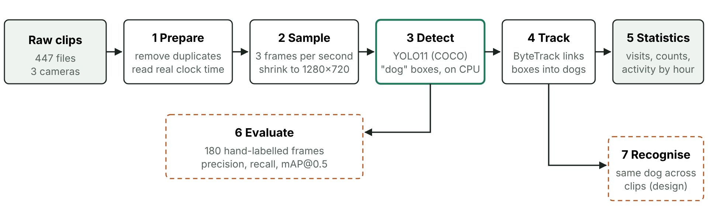
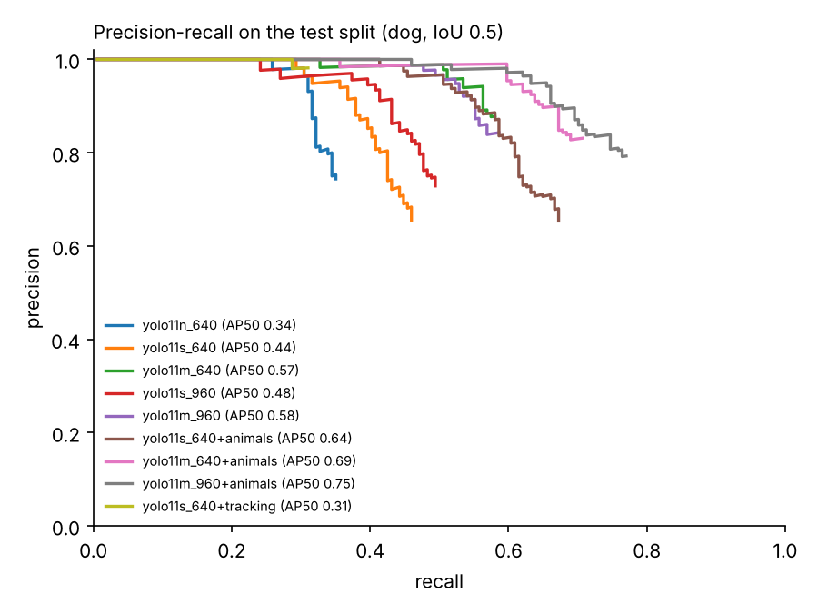
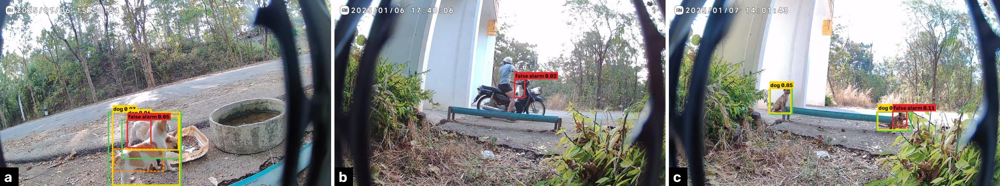
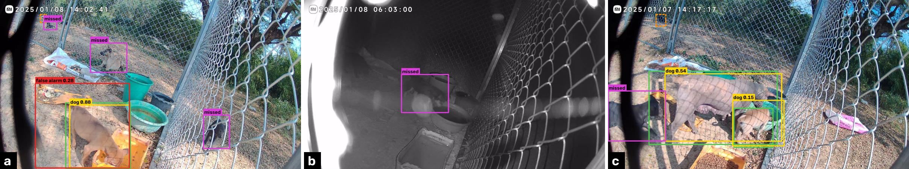
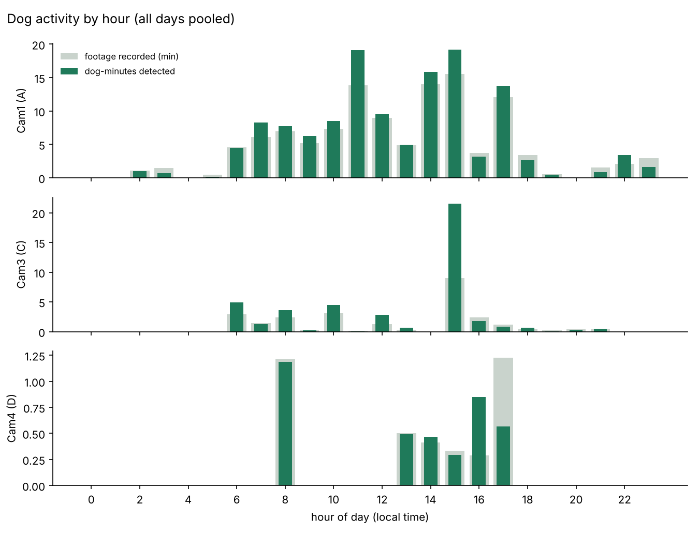
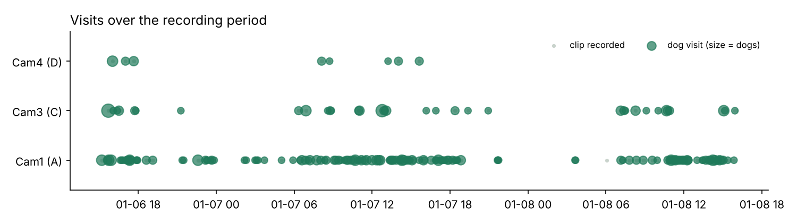

Figure 1. Camera3, day and infrared night. Dogs range from close-up to a few dozen pixels on the far road.
Figure 1. Camera3, day and infrared night. Dogs range from close-up to a few dozen pixels on the far road.Technical report · CMKL course assignment · repository: Epp-ppE/stray-dog-detection
Cameras at three community feeding spots in Chiang Mai recorded 447 motion-triggered clips (6–8 January 2025) with no labels. This project builds a CPU-only pipeline that finds and locates dogs in that footage, follows each dog through a clip, and turns the result into visit and activity statistics per camera. Before any modelling, two hidden problems in the data were found and fixed: 22 duplicate files, and wrong timestamps in Camera1's filenames, which were recovered from the clock burned into the video. Because no labels existed, 180 frames were chosen at random and hand-labelled (332 dogs), split by clip into a dev half for tuning and a test half for reporting. Nine detector setups were compared. A COCO-pretrained YOLO11m at 960 px, counting every animal class as "dog", reached AP@0.5 = 0.75 [95% CI 0.67–0.83] and F1 = 0.78 on the test half, against 0.44 and 0.54 for the YOLO11s baseline. The largest single gain came from counting every animal class as dog, because the pretrained model often calls puppies "cat" and calls dogs in night-time infrared "sheep" or "cow". The main remaining failures are small or far-away dogs, dark dogs in infrared, dogs behind the chain-link fence, and groups of overlapping puppies. On all 425 clips, tracking with settings tuned on dev keeps 95% precision at 54% recall, and gives conservative statistics: Camera1's feeding area sees about 45 dog visits a day, mostly in daylight, and dogs spend under a quarter of their time moving. A design for recognising individual dogs across clips is given, with a small untrained demo that groups 150 Camera3 tracks into 72 candidate dogs.
| Camera | Scene | Files | Unique clips | Footage | Night (infrared) clips |
|---|---|---|---|---|---|
| Camera1 (A) | Fenced feeding area, bowls, chain-link fence | 341 | 341 | 116.6 min | 58 |
| Camera3 (C) | Water trough by a forest road | 74 | 73 | 26.0 min | 7 |
| Camera4 (D) | Bench beside a building, behind plants | 32 | 11 | 4.0 min | 0 |
| Total | 447 | 425 | 2.44 h | 65 |
All clips are 2560×1440, 15 fps, H.265 with audio, 3–30 s long (median about 20 s), from Xiaomi cameras with a wide-angle lens. Night clips are black-and-white infrared with strong glare near the lens.
Figure 1. Camera3, day and infrared night. Dogs range from close-up to a few dozen pixels on the far road.
Duplicates. File fingerprints (MD5) showed 22 byte-identical copies. Twenty-one are
Camera4 files saved two or three times ((1), (2) suffixes) and one is a re-shared
Camera3 file. Counting them would double- or triple-count visits. One copy of each is kept.
Wrong timestamps. Camera3/4 filenames are Unix-millisecond start times that match the
on-screen clock. Camera1 filenames (VIDEO_20250108_161610468) all fall between 16:16 and
18:24 on 8 January, but the burned-in clock shows recordings across 6–8 January,
including at night: the names are export times. Time-of-day statistics need the real time,
so it was read from the overlay. General text recognition (Tesseract) read only 2 of 20
test clips, because the white digits disappear against bright sky (Figure 2). Since the
font, size and position never change, each of the 14 digit positions is instead cut out
and classified separately (HOG features, 3-nearest-neighbours). Training labels came free
from Camera3/4, whose filenames give the true time of every frame. On 25 held-out clips:
99.5% of digits correct, 93.4% of single-frame timestamps fully correct, and every
clip start time (median over all frames of the clip) within 0.13 s. On every Camera1
clip at least 80% of the frames agree on the start time.
 Figure 2. The clock strip after four kinds of image clean-up. A person reads it easily; general text recognition does not.
Figure 2. The clock strip after four kinds of image clean-up. A person reads it easily; general text recognition does not.

| Step | What | Why |
|---|---|---|
| 1. Prepare | Remove duplicates; recover real start times | Avoid double counting; correct time of day |
| 2. Sample | 3 frames/s, shrunk to 1280×720 (ffmpeg drops frames before shrinking) | No GPU. Neighbouring frames at 15 fps are almost identical, and 3 fps still follows a walking dog. 5× less compute |
| 3. Detect | COCO-pretrained YOLO11; every COCO animal class counted as dog; class-agnostic NMS (IoU 0.6) removes duplicate boxes on one animal; all boxes ≥ 0.01 stored | No labels to train on, so a strong pretrained detector is the honest baseline. Storing low-confidence boxes lets thresholds be tuned without re-running the model |
| 4. Track | ByteTrack per clip; a track is a confirmed dog only if it lasts long enough and is confident at least once; settings chosen on the dev clips | Removes one-frame flickers; gives time on screen and movement per dog |
| 5. Statistics | Visits, dogs per visit, dog-minutes by hour, moving vs resting, close contact | The information a vaccination or sterilisation team needs |
Model choice. YOLO11 comes in several sizes; n, s and m were compared at 640 px input and s and m at 960 px. A larger input helps small, far-away dogs (Camera3's road), and a larger model helps hard poses and infrared. Speed on the 4-core CPU used here: 41 / 83 / 226 ms per frame at 640 px (n / s / m), and 204 / 492 ms at 960 px (s / m).
Counting every animal class as dog. COCO has no "puppy" class, and its night images are colour photos, not infrared. Of the labelled dogs the final model found, 28% had a non-dog class as their most confident label (mostly "cat"), and 52% at night. Counting all animal classes (cat, dog, horse, sheep, cow, bear) as dog recovers these. The cost is that real cats or livestock would also be counted as dogs. No other animals appeared in the 180 labelled frames, but a deployment near farms would need a check.
Thresholds. Every confidence threshold was chosen on the dev half only (best F1). The chosen box thresholds are very low (0.01–0.04), because this footage is far from COCO's photos and the model's confidence is badly calibrated for it: many correct dog boxes score below 0.1. At the common default of 0.25, the final setup keeps 98% precision but recall drops from 0.75 to 0.60.
Statistics definitions. * Dogs in a clip: the most confirmed tracks visible in any one frame. This is a lower bound on distinct dogs that does not grow when the tracker loses and re-finds a dog. * Dog-seconds: the number of dogs in each frame, summed and divided by 3 frames per second. * Visit: consecutive clips with dogs on one camera, merged when the gap is ≤ 2 minutes (the camera records bursts of short clips). * Moving vs resting: box-centre speed in body lengths per second, using box height as a proxy for body length. Above 0.25 counts as moving. * Close contact: two dogs whose box centres are closer than their average box width.
Labelled set. 180 frames from 115 clips were drawn at random before any model output was seen, stratified by camera and day/night (Camera1 50 day + 20 night, Camera3 45 + 15, Camera4 50 day). At most 2–6 frames come from one clip, at least 3 s apart, because neighbouring frames are near-copies. The frames are pixel-identical to what the detector sees. They were labelled in a purpose-built browser tool with a written guide: * one box per dog, covering its visible extent only; * a hard flag for dogs less than about a quarter visible or too small or unclear to be sure; * fixed background objects (a rock that appears in every Camera1 frame) are not dogs.
The result: 332 dog boxes, 28 hard boxes and 20 frames with no dog. No frames were skipped.
Split. Whole clips are assigned to dev (87 frames) or test (93 frames), so no clip appears in both. Thresholds, the tracker settings and the choice of final setup use dev only. Headline numbers are test numbers.
Matching and metrics. A predicted box is a true positive if its IoU with a not-yet-matched dog box is ≥ 0.5 (greedy, most confident first). Predictions on hard boxes are ignored, and missed hard boxes are not counted as misses. Reported: AP@0.5 (all-point interpolated area under the precision–recall curve; with one class, mAP@0.5 = AP@0.5), plus precision, recall and F1 at the dev-chosen threshold. 95% intervals come from 1,000 bootstrap resamples of the test frames.
Baselines and comparisons. The baseline is the default choice: YOLO11s at 640 px with the "dog" class only. It is compared with model size (n/s/m), input size (640/960), counting other animal classes, and the tracking filter.
 Figure 3. Test AP@0.5 with 95% bootstrap intervals. Light green: every animal class counted as dog.
Figure 3. Test AP@0.5 with 95% bootstrap intervals. Light green: every animal class counted as dog.
| Setup | dev AP50 | threshold | test AP@0.5 [95% CI] | precision | recall | F1 [95% CI] |
|---|---|---|---|---|---|---|
| YOLO11n @640 | 0.32 | 0.015 | 0.34 [0.26–0.42] | 0.77 | 0.34 | 0.48 [0.39–0.55] |
| YOLO11s @640 (baseline) | 0.50 | 0.023 | 0.44 [0.36–0.52] | 0.71 | 0.44 | 0.54 [0.47–0.62] |
| YOLO11m @640 | 0.56 | 0.029 | 0.57 [0.49–0.65] | 0.91 | 0.56 | 0.70 [0.63–0.76] |
| YOLO11s @960 | 0.56 | 0.043 | 0.48 [0.40–0.56] | 0.82 | 0.46 | 0.59 [0.52–0.66] |
| YOLO11m @960 | 0.61 | 0.010 | 0.58 [0.49–0.67] | 0.84 | 0.59 | 0.69 [0.61–0.76] |
| YOLO11s @640 + animals | 0.71 | 0.044 | 0.64 [0.57–0.71] | 0.77 | 0.61 | 0.68 [0.62–0.74] |
| YOLO11m @640 + animals | 0.75 | 0.025 | 0.69 [0.62–0.75] | 0.87 | 0.67 | 0.76 [0.70–0.81] |
| YOLO11m @960 + animals (final) | 0.79 | 0.017 | 0.75 [0.67–0.83] | 0.81 | 0.75 | 0.78 [0.71–0.83] |
| YOLO11s @640 + tracking (original settings) | 0.34 | 0.145 | 0.31 [0.23–0.40] | 0.98 | 0.31 | 0.47 [0.38–0.56] |
| YOLO11m @960 + animals + tracking (tuned, used for statistics) | 0.64 | 0.055 | 0.54 [0.47–0.63] | 0.95 | 0.54 | 0.69 [0.62–0.76] |

Figure 4. Precision–recall on the test half for all setups.Final setup, at its dev-chosen threshold, on all 180 labelled frames:
| Subset | Frames | Dogs | AP@0.5 | Precision | Recall | Baseline AP |
|---|---|---|---|---|---|---|
| Camera1 (fenced area) | 70 | 132 | 0.70 | 0.87 | 0.70 | 0.41 |
| Camera3 (trough, road) | 60 | 121 | 0.82 | 0.86 | 0.84 | 0.60 |
| Camera4 (bench, plants) | 50 | 79 | 0.79 | 0.80 | 0.80 | 0.34 |
| Day | 145 | 291 | 0.77 | 0.83 | 0.77 | 0.48 |
| Night (infrared) | 35 | 41 | 0.76 | 0.97 | 0.76 | 0.35 |
| Dog size (share of frame area) | Dogs | Recall |
|---|---|---|
| tiny (< 0.2%) | 9 | 0.33 |
| small (0.2–1%) | 90 | 0.57 |
| medium (1–5%) | 133 | 0.83 |
| large (> 5%) | 100 | 0.93 |
Of the 180 frames, 109 are fully correct, 51 have at least one missed dog and 20 have at
least one false alarm. The full gallery is in outputs/examples/. Green boxes are hand
labels, yellow are correct detections, red are false alarms, magenta are missed dogs and
dashed orange are hard (ignored) labels.
 Figure 5. Successes. (a) Camera3: six dogs, four of them tiny on the far road, found at
confidences as low as 0.02. (b) Camera1 at night: four dogs including a pile of puppies,
in infrared. (c) Camera4 against the sun: dogs in plants and behind the bench.
Figure 5. Successes. (a) Camera3: six dogs, four of them tiny on the far road, found at
confidences as low as 0.02. (b) Camera1 at night: four dogs including a pile of puppies,
in infrared. (c) Camera4 against the sun: dogs in plants and behind the bench.

Figure 6. False alarms. (a) A pile of puppies gets an extra box spanning two of them. (b) Part of the motorbike and rider is boxed at 0.02 confidence. (c) A dog lying in plants gets a second, shifted box.
Figure 7. Missed dogs. (a) Dark puppies at the back of Camera1's enclosure and a dog behind the fence mesh are missed; a loose box over a dog and the food tray counts as a false alarm. (b) A dog at the bowl at night, washed out by infrared glare. (c) A black dog cut off at the lens edge and pressed against other dogs.The final detector was run on all 425 clips (26,325 sampled frames, 2.7 hours on 4 CPU
cores). ByteTrack then linked boxes within each clip. Its settings were chosen on the dev
clips by a grid search over 64 combinations (src/tune_tracker.py), maximising F1 of the
boxes that survive tracking:
| Setting | Original | Tuned on dev |
|---|---|---|
| Start a new track / match in first stage | conf ≥ 0.40 / 0.35 | conf ≥ 0.10 / 0.10 |
| Match in second stage | conf ≥ 0.10 | conf ≥ 0.01 |
| Confirmed track | ≥ 3 frames, peak conf ≥ 0.45 | ≥ 2 frames, peak conf ≥ 0.10 |
Tracking trades recall for precision. On the test half, the boxes of confirmed tracks have precision 0.95 (5 false alarms in 93 frames) but recall 0.54, against 0.81 and 0.75 for the detector alone. Precision matters more for statistics, because a false track adds a visit that never happened, while a dog missed in some frames is usually still found in others. The statistics below are therefore lower bounds: the dogs they count are almost all real, but brief, small and far-away dogs are often not counted.
Result: 1,073 confirmed tracks in 413 of the 425 clips. Clips with dogs less than 2 minutes apart form one visit.
| Camera1 (fenced feeding area) | Camera3 (water trough) | Camera4 (bench) | |
|---|---|---|---|
| Clips / footage | 341 / 117 min | 73 / 26 min | 11 / 4 min |
| Clips with a dog | 98% | 92% | 100% |
| Visits | 136 (45 per day) | 34 (11 per day) | 8 (4 per day) |
| Median visit length | 32 s | 29 s | 22 s |
| Most dogs in one frame | 4 | 7 | 4 |
| Mean dogs per visit (most at once) | 1.8 | 2.2 | 2.1 |
| Dog-minutes on screen | 132 | 44 | 4 |
| Share of dog time moving | 11% | 16% | 23% |
| Dog-minutes in close contact | 14 | 6 | 0.2 |
| Night visits | 29 | 4 | 0 |

Figure 8. Dog-minutes detected (green) and footage recorded (grey) by hour of day, all days pooled. Dog-minutes can exceed footage minutes because two dogs on screen for one minute count as two dog-minutes.
Figure 9. Every visit over the three days; dot size is the number of dogs.What the numbers say, within the limits above:
The full design is in docs/recognition_design.md. In short:
src/reid_demo.py tries the idea with no training and no identity labels:
Result: 150 tracks formed 72 groups, of which 30 span two or more clips. The groups are candidates for a person to check, not confirmed identities: with no identity labels, accuracy cannot be measured, and a labelled set of 20–30 dogs is the first step of the full design.
 Figure 10. A group that looks right: the same white puppy with a black face patch, in seven
tracks across six clips, from 6 to 8 January.
Figure 10. A group that looks right: the same white puppy with a black face patch, in seven
tracks across six clips, from 6 to 8 January.
 Figure 11. A group that mixes dogs: several look-alike white-and-tan littermates are
joined. Generic features capture coat colour and pose, not the fine details that separate
siblings. This is the case the fine-tuned model and the part-based features in the design
are meant to fix.
Figure 11. A group that mixes dogs: several look-alike white-and-tan littermates are
joined. Generic features capture coat colour and pose, not the fine details that separate
siblings. This is the case the fine-tuned model and the part-based features in the design
are meant to fix.
Everything is in the repository. bash scripts/run_all.sh downloads the footage from the
GitHub release, downloads model weights and runs every step. The README lists the steps
and times. Hand labels, the evaluation-frame list, the cached predictions on the evaluation
frames, all metrics, tracks and statistics are committed under outputs/. Random choices
use fixed seeds. Software versions are pinned in requirements.txt.